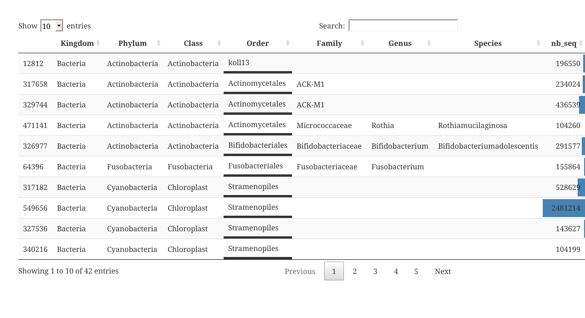
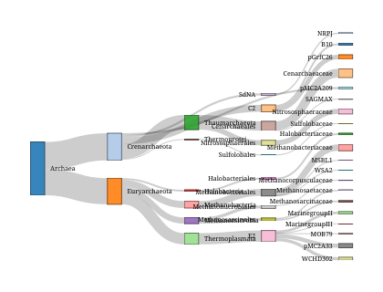

The goal of MiscMetabar is to complete the great package dada2 and phyloseq.
Installation
There is no CRAN version of MiscMetabar for now.
You can install the development version from GitHub with:
# install.packages("devtools")
devtools::install_github("adrientaudiere/MiscMetabar")
#> Downloading GitHub repo adrientaudiere/MiscMetabar@master
#> Skipping 1 packages not available: phyloseq
#> checking for file ‘/tmp/RtmpzqxuoJ/remotes6d2c45404455/adrientaudiere-MiscMetabar-ab13a95/DESCRIPTION’ ... ✓ checking for file ‘/tmp/RtmpzqxuoJ/remotes6d2c45404455/adrientaudiere-MiscMetabar-ab13a95/DESCRIPTION’
#> ─ preparing ‘MiscMetabar’:
#> checking DESCRIPTION meta-information ... ✓ checking DESCRIPTION meta-information
#> ─ checking for LF line-endings in source and make files and shell scripts
#> ─ checking for empty or unneeded directories
#> ─ building ‘MiscMetabar_0.20.tar.gz’
#>
#>
#> Installing package into '/home/adrien/R/x86_64-pc-linux-gnu-library/3.6'
#> (as 'lib' is unspecified)Example
This is a basic example which shows you how to solve a common problem:
Summarize a physeq object
library("MiscMetabar")
#> Loading required package: ggplot2
#> Loading required package: phyloseq
#> Loading required package: grid
#> Loading required package: vegan
#> Loading required package: permute
#> Loading required package: lattice
#> This is vegan 2.5-6
#> Loading required package: dada2
#> Loading required package: Rcpp
#> Loading required package: magrittr
#>
#> Attaching package: 'MiscMetabar'
#> The following object is masked from 'package:phyloseq':
#>
#> phyloseq_to_deseq2
library("phyloseq")
data("esophagus")
summary_plot_phyloseq(esophagus)
Create an interactive table of the tax_table
data("GlobalPatterns")
tax_datatable(subset_taxa(GlobalPatterns,
rowSums(GlobalPatterns@otu_table)>100000))
Sankey diagramme of the tax_table
GP <- subset_taxa(GlobalPatterns, GlobalPatterns@tax_table[,1] == "Archaea")
sankey_phyloseq(GP, taxa = c(1:5))
Circle for visualise distribution of taxa in function of samples variables
otu_circle(GP, 'SampleType', taxa = "Class")
#> [1] "Only 4 modalities are plot (44.44%). Use 'min_prop_mod' to plot more samples."
#> [1] "Only 4 taxa are plot (44.44%). Use 'min_prop_tax' to plot more taxa"